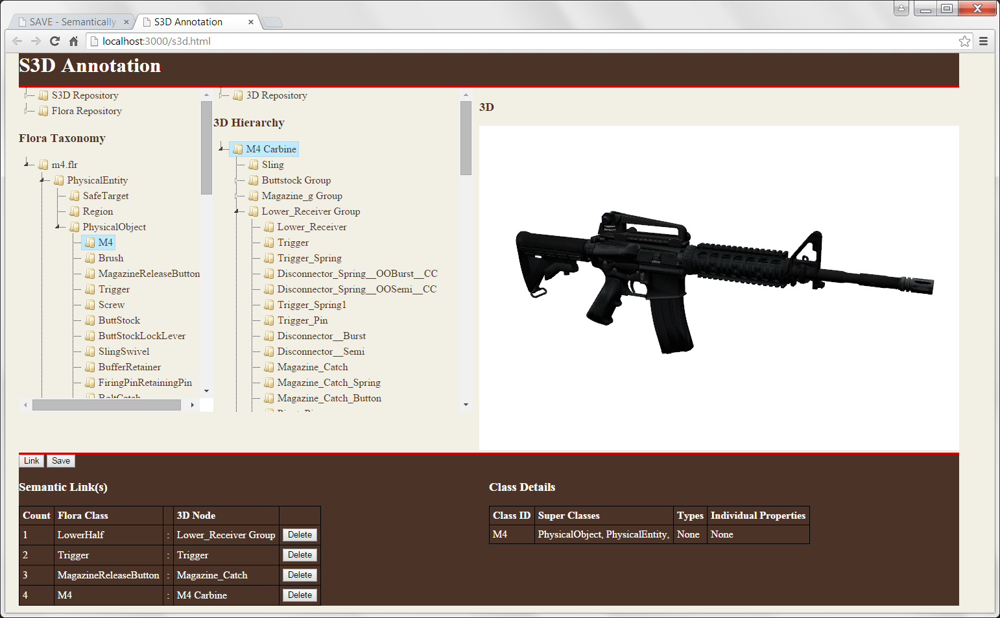

Semantic 3D Annotation Tool (S3D)
The S3D annotation tool enables you, as a 3D content author, to associate semantic classes with corresponding nodes of a 3D model.
- Start the tool by clicking the 'Launch S3D' button below the image.
- Choose a Flora ontology and a 3D model from the corresponding repository menu.
- Note: a previously saved S3D annotation (e.g. M4.s3d) may instead be loaded from the S3D repository.
- Link an ontology class to a 3D node by selecting one of each (blue highlights) and then clicking 'Link'.
- To remove links, click 'Delete' next to the listed link pair.
- Class properties may be examined by right-clicking on the class and selecting 'Info'.
- Save the annotation file (.s3d format) by clicking 'Save' and entering the requested info*.
* Note: When saving the .s3d file, the 'Filename' path defaults to the /s3d/ repository. The 'Asset name' should be a friendly name unique to all other assets, since assets with duplicate names are not shown in the CAT.
Result: The .s3d file containing your link information is written to the server and becomes available for use by the Content Assembly Tool (CAT).
Next, you will assemble the exercise scene.